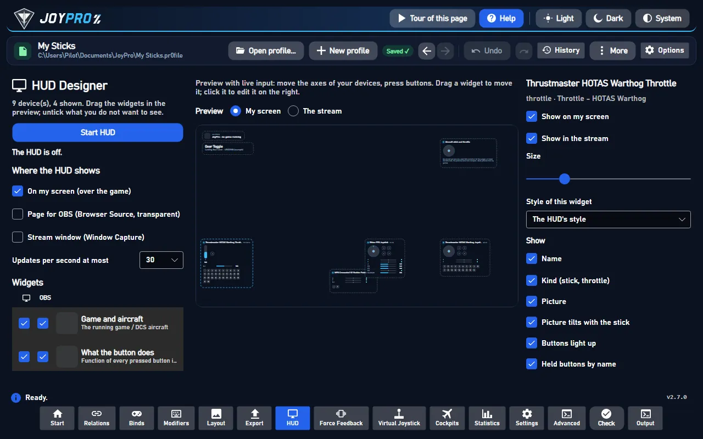

#Kveikja/slökkva á yfirlagi
HnappurskrifaðRæsa HUD / Stöðva HUD: ræsir HUD-ið með úttökunum sem hakað er við hér að ofan: les tækin ef þarf, finnur leikinn sem er í gangi og hleður úthlutunum hans.
Ef ýtt er aftur lokar það öllum úttökum.
HUD-ið sýnir tækin þín á skjánum á meðan þú spilar, eins og stýripinnayfirlag streymara: myndin af stýripinnanum hallast með stýripinnanum þínum, stangir og ásar hreyfast sem stikur, hnappar sem haldið er niðri lýsast upp með nöfnum sínum, og lína segir hvað hnappurinn sem ýtt er á gerir í leiknum sem er í gangi ("Gear Toggle"). Það getur birst yfir leiknum, í OBS eða hvort tveggja, hvert með sín eigin smáforrit. Þessi síða er hönnuður þess.


flowchart LR D["Tækin þín"] --> P["HUD-ið"] O["Úthlutanirnar þínar<br/>í leiknum"] --> P P --> S["Á skjánum mínum"] P --> B["Síða fyrir OBS"] P --> W["Streymisgluggi"]
Stöðva HUD (sami hnappur) lokar því. Allt sem þú stillir hér helst og er þar aftur eftir endurræsingu.
Dragðu smáforrit í forskoðuninni til að færa það; smelltu á það til að breyta því hægra megin. Raða sjálfvirkt setur þau meðfram botninum: hreyfilstjórn og tæki vinstri handar vinstra megin, fótstig í miðjunni, stýripinna hægri handar hægra megin.


HUD-glugginn er gegnsær og helst ofan á leikjum í glugga og rammalausum ham. Smellir fara í gegnum hann í leikinn. Hann er hvorki á verkstikunni né í Alt+Tab. Eingöngu-allur-skjár (exclusive full screen) felur hann (takmörkun í Windows): stilltu leikinn á rammalausan ham. Lína hnappsins sem ýtt er á nefnir aðgerð þess leiks og þeirrar flugvélar, til dæmis "Weapon Release" í F-16C og "Fire guns" í IL-2.
Úttökin þrjú eru óháð hvert öðru:
| Úttak | Fyrir | Hvernig |
|---|---|---|
| Á skjánum mínum (yfir leiknum) | þig | gegnsær gluggi ofan á leiknum |
| Síða fyrir OBS (Browser Source, gegnsæ) | streymið þitt (mælt með) | JoyPro þjónar síðu aðeins á þessari tölvu; Afrita setur slóð hennar á klippiborðið |
| Streymisgluggi (Window Capture) | streymi með Window Capture | venjulegur gluggi (getur verið fyrir aftan leikinn) með gegnsæjum bakgrunni eða chroma key-bakgrunni |
Taktu hakið af Á skjánum mínum til að spila með hreinan skjá á meðan streymið sýnir samt HUD-ið, eða sýndu ólík smáforrit á hvoru: hvert smáforrit hefur tvö hök, skjá (skjáinn þinn) og OBS (streymið). Forskoðun: Skjárinn minn / Streymið skiptir um það sem hönnuðurinn sýnir. Hámarksuppfærslur á sekúndu (15, 30 eða 60; 30 er mjúkt og létt).
http://127.0.0.1:8765/hud).Síðan teiknar smáforritin sem hakað er við fyrir streymið, á sömu stöðum og með sama stíl og í forritinu, á 1920 x 1080 sviði sem er kvarðað að upprunanum. Er annað forrit með gáttina? Veldu aðra undir Gátt og afritaðu slóðina aftur.


Window Capture í staðinn: hakaðu við Streymisgluggi, veldu bakgrunninn (gegnsær, grænn, magenta, blár eða þinn litur). Í OBS skaltu bæta við Window Capture með Capture Method: Windows 10 (1903 and up); með lit skaltu bæta við Chroma Key-síu í þeim lit. Ef gegnsær bakgrunnur birtist svartur í OBS hjá þér skaltu nota Browser Source eða lit.
Hvernig OBS Browser Source fær HUD-ið: ein síða, síðan aðeins breytingarnar.
| # | Hver | Hvað gerist |
|---|---|---|
| 1 | OBS | Browser Source opnar http://127.0.0.1:8765/hud. |
| 2 | JoyPro | Sendir síðuna: útlit, stíla og myndir. |
| 3 | OBS | Opnar /hud/events. Hún helst opin. |
| 4 | JoyPro | Sendir stöðuna (ása, hnappa, hvað hnappurinn gerir), í mesta lagi 30 sinnum á sekúndu og aðeins þegar eitthvað hefur breyst. |
| 5 | JoyPro | Sendir útlitið aftur þegar græjur, staðir eða stílar breytast. |
Smáforrit sýnir öll tæki auk hausins, úthlutanaborðans og flugvélasmáforritsins. Endurhlaða tæki les tengdu tækin aftur; Sýna allt hakar við öll smáforrit fyrir skjáinn þinn; Raða sjálfvirkt og Endurstilla staði setja þau á sinn stað.
Fyrir hvert smáforrit (smelltu á það í forskoðuninni eða listanum):


Flugvélasmáforritið: stýripinni, hreyfilstjórn, slaglengdarstika hreyfilstjórnar, staða pinnans, stjórntæki lýsast upp, stjórntæki sem haldið er niðri eftir nafni; Flugvélar (Sjálfvirkt: flugvélin sem þú flýgur, eða hvaða mynd sem er stillt á þessari tölvu) og Hreyfist með (stýripinninn og hreyfilstjórnin sem hreyfa það). Myndir þess koma úr eigin stjórnklefamyndum leiksins (Stjórnklefar > Gera myndir úr leikjunum mínum, eða myndapakki), annars úr línuteikningu JoyPro af raunverulega haldfanginu.
Stíll hefur 40 forstillingar: Gler, Neon, Lágmarks, hreinar (Hélað gler ljóst, Streymari einfalt, Streymari áberandi, Þjappað, Stór texti, Pastel, Aðeins útlínur), stjórnklefaskjáir (Hernaðargrænt HUD, Rafgult MFD, Farþegaþotu-PFD, Glerstjórnklefi, Nætursjón, Rauð stjórnklefalýsing, Vigur-vírgrind, Retró útstöð, Warbird, Heilmynd), leikir og leikjagerðir (Geimhermir appelsínugult, Holo blágrænt, Cyberpunk, Synthwave, Neonbleikt, Kappakstur, Taktískt sandlitað, Dökkblátt og gull, Laumuflug, Draugur), litaþemu (Norðurskaut, Eyðimörk, Haf, Sólsetur, Konunglegt, Koltrefjar) og læsileiki (Mikil birtuskil, Mikil birtuskil ljóst, Einlitt, Einlitt ljóst). › fer í næsta.


Fyrir neðan: áherslulitir með einum smelli, Áhersla, Niðri og Ógegnsæi, síðan hönnunarvalkostir fyrir hvern þátt: Spjöld (bakgrunnur, rammi, horn, skuggi), Texti (letur, stærð, stafabil, litir, Feitletruð heiti), Stýripinnabirting (hringur, ferningur, krosshár, ratsjá, punktur; stærð, ljómi), Súlur og stangir (form, hæðir, tómi hlutinn) og Hnappar og merkimiðar (form). Breyttur valkostur gerir stílinn að „Eigin hönnun (breytt)“: Vista stíl geymir hann undir þínu nafni, Afturkalla breytingar fer aftur í forstillinguna, Flytja út stíl... / Flytja inn stíl... deila honum sem skrá, Eyða fjarlægir þinn eigin stíl.
Hvað hnappurinn gerir: hve margar línur, hve lengi þær standa (sekúndur), leturstærðin, Sýna tæki og hnapp og Aðeins meðan leikur keyrir. Smellir fara í gegn lætur músarsmelli fara í gegnum HUD-gluggann (gildir þegar HUD-ið ræsist).
JoyPro finnur leikinn sem er í gangi eftir ferli hans (DCS, IL-2, Star Citizen og alla aðra leiki sem það styður) og sýnir aðeins úthlutanir þess leiks. DCS þarf líka flugvélina: veldu hana undir DCS-flugvél, eða Setja upp DCS-krók svo DCS segi JoyPro hver flugvélin er í upphafi hvers verkefnis (lítil Lua-skrá auk einnar varinnar línu í Export.lua, sem er afrituð fyrst; Fjarlægja setur skrána aftur bæti fyrir bæti; lokaðu DCS fyrst). Athuga segir hvort krókurinn er uppsettur.


View model: MainWindowViewModel.Hud.cs (tæki, smáforrit, uppröðun), MainWindowViewModel.HudStyles.cs (forstillingar, eigin stílar, inn-/útflutningur), MainWindowViewModel.HudStream.cs (úttök, streymissíða, flugvélasmáforrit), MainWindowViewModel.HudAxes.cs (ásar stýripinna), MainWindowViewModel.Overlay.cs (ræsa/stöðva, leikurinn í gangi, hnappalínur, DCS-krókur). Sýnir: Views/HudWindow.axaml, Views/Controls/HudSurface.axaml, HudElements.cs, HudPanel.cs. Forstillingar: Models/HudStylePresets.cs.
engine hud devices gefur fyrir hvert tengt tæki gerð, tegund, hönd, vörumynd, ása með hlutverki sínu, hnappa með nöfnum sínum og auðkennum stjórntækja (Controls, fyrir flugvélasmáforritið) og útlitsmyndina með staðsetningum hnappa.engine overlay map (--game, --plane, --unit): úthlutuðu hnapparnir með breytihnöppum og titlum. Úthlutun með breytihnöppum sést á meðan breytihnöppum hennar er haldið niðri; úthlutunin með flesta samsvarandi breytihnappa vinnur.engine overlay dcs-hook status / install / remove (--path, --dry-run): Scripts\JoyProOverlay.lua auk einnar línu í Export.lua sem er vafin í pcall; DCS sendir tegund einingarinnar á 127.0.0.1:1992 (UDP). Krókurinn kallar á útflutningsföll annarra skrifta (SRS, Tacview) sem hann leysir af hólmi.Services/HudStreamServer.cs, HudStreamHub.cs, Resources/hud-stream.html; bundinn aðeins við 127.0.0.1, beiðnum með öðru hýsilheiti er hafnað. GET /hud (síða), /hud/events (Server-Sent Events: layout, state), /hud/img/<id> (myndir sem PNG), /hud/state (JSON). Án tengdrar síðu hlustar hann aðeins.Services/HudInputPump.cs geymir aðeins nýjustu skýrsluna fyrir hvert tæki og beitir þeim á valinni tíðni; þættir eru aðeins teiknaðir aftur við breytingu; engu er úthlutað í minni fyrir hverja skýrslu; myndir eru skornar einu sinni (haldföng flugvéla 480 px há). Mælt með þolprófun HUD-sins gagnvart mörkum fyrir örgjörva, minnisúthlutun og minni.%APPDATA%\JoyPro2\hud.json (staðir, stærðir, hök fyrir hvert smáforrit fyrir skjá og streymi, stíllinn með öllum valkostum, eigin stílar, úttök, gátt, bakgrunnur, uppfærslutíðni). Stílskrár: *.joypro-hudstyle.json ("format": "joypro-hud-style").Tilvísun: hud.
Skjölun eiginleikanna á bak við þessa síðu, búin til úr gagnasafninu:
42 stjórnhlutir, lesnir úr frumkóða forritsins: 42 skrifaðir, 0 með staðreyndunum úr frumkóðanum (vísbending, athugasemd í kóða, kall í vélina), 0 enn eftir að útvíkka.
Ræsa HUD / Stöðva HUD: ræsir HUD-ið með úttökunum sem hakað er við hér að ofan: les tækin ef þarf, finnur leikinn sem er í gangi og hleður úthlutunum hans.
Ef ýtt er aftur lokar það öllum úttökum.
Vísbending Gegnsætt HUD ofan á leiknum. Taktu hakið af til að halda þínum eigin skjá hreinum á meðan streymið sýnir enn HUD.
Sýnir HUD-ið sem gegnsæjan glugga ofan á leiknum.
Taktu hakið af til að halda þínum eigin skjá hreinum á meðan streymið sýnir samt HUD-ið.
Vísbending JoyPro birtir HUD sem vefsíðu, aðeins á þessari tölvu. Bættu við Browser Source með þessu vistfangi í OBS: bakgrunnurinn er gegnsær, ekkert eigið CSS þarf.
Á meðan HUD-ið keyrir birtir JoyPro það sem vefsíðu aðeins á þessari tölvu fyrir OBS Browser Source: gegnsær bakgrunnur, ekkert sérsniðið CSS.
Ef hakað er við sjást vistfangið með Afrita og Gátt hér fyrir neðan.
Afritar vistfang OBS-síðunnar á klippiborðið.
Í OBS: Sources > + > Browser, límdu það inn sem URL, breidd 1920, hæð 1080.
Vísbending Sérstakur gluggi, ekki efst: hann má vera á bak við leikinn. Í OBS: Window Capture með upptökuaðferðinni Windows 10 (1903 og nýrri); með chroma key-lit bætirðu við Chroma Key-síu.
Á meðan HUD-ið keyrir opnar það eigin glugga fyrir Window Capture í OBS, með gegnsæjum bakgrunni eða chroma key-lit sem valinn er hér fyrir neðan.
Í OBS: tökuaðferð Windows 10, og Chroma Key-sía fyrir lit.
Skjáhak smáforrits í listanum: sýnir það á skjánum þínum.
OBS-hak smáforrits í listanum: sýnir það í streyminu.
Les tengdu tækin aftur: ný tæki fá smáforrit, myndirnar og hnappaheitin eru endurnýjuð.
Notaðu það eftir að tæki hefur verið tengt.
Hakar við öll smáforrit fyrir skjáinn þinn. Taktu hakið af þeim sem þú vilt ekki í listanum.
Vísbending Hreyfilstjórn og vinstri hönd til vinstri, fótstig í miðjunni, hægri handar stýripinni til hægri, meðfram neðri brún
Raðar smáforritum tækjanna sem sýnd eru á skjánum þínum meðfram neðri brúninni: hreyfilstjórn og vinstrihandartæki til vinstri, fótstig í miðjunni, hægrihandarstýripinni til hægri; það sem kemst ekki fyrir fer eina röð upp.
Nýju staðirnir eru geymdir.
Setur hvert smáforrit aftur á sjálfgefinn stað og í sjálfgefna stærð; það sem hvert smáforrit sýnir helst.
Vísbending Næsti stíll
Skiptir HUD-inu yfir í næstu færslu í listanum Stíll.
Gefur stílnum þennan áherslulit. HUD-ið tekur hann strax; stíllinn sést sem "eigin hönnun" þar til þú vistar hann.
Sýnir heiti smáforritanna feitletruð. Hluti af stílnum: breytir honum í "eigin hönnun" þar til vistað er.
Geymir núverandi hönnun sem þinn eigin stíl undir nafninu sem slegið er inn við hliðina, og gerir hann að stíl HUD-sins.
Nafni forstillingar er hafnað; stílnum þínum með sama nafni er skipt út.
Les stílskrá og gerir hana að einum af stílunum þínum og að stíl HUD-sins.
Nafn sem þú notar þegar fær númer.
Vistar núverandi hönnun sem stílskrá til að deila eða geyma; HUD-ið breytist ekki.
Vísbending Aftur í stílinn sem valinn var að ofan
Setur hönnunina aftur í stílinn sem þú hafðir fyrir handvirku breytingarnar: stílinn sem síðast var valinn, vistaður eða fluttur inn.
Eyðir völdum eigin stíl. Smáforrit sem notuðu hann fara aftur í stíl HUD-sins; HUD-ið heldur núverandi útliti sínu.
Bætir tækinu og hnappinum við undir hverja línu í Hvað hnappurinn gerir.
Sýnir línurnar Hvað hnappurinn gerir aðeins á meðan studdur leikur keyrir; slökkt sjást þær líka á skjáborðinu.
Músarsmellir fara í gegnum HUD-gluggann til leiksins.
Tekur gildi þegar HUD-ið ræsist: stöðvaðu það og ræstu aftur eftir að þú breytir þessu.
Setur DCS-krókinn upp: Scripts\JoyProOverlay.lua og eina varða línu í Export.lua.
Lokaðu DCS fyrst.
Fjarlægir DCS-krókinn aftur: Export.lua er bæti fyrir bæti eins og áður.
Lokaðu DCS fyrst.
Athugar hvort DCS-krókurinn sé settur upp í DCS-möppunni í Stillingum.
Breytir engu.
Skjárinn minn / Streymið: hvað forskoðun hönnuðarins sýnir, smáforritin sem hakað er við fyrir skjáinn þinn eða þau sem hakað er við fyrir streymið.
Aðeins forskoðunin breytist; valið er geymt fyrir næstu ræsingu.
Sýnir valið smáforrit á skjánum þínum.
Sýnir valið smáforrit í streyminu: OBS-síðunni og streymisglugganum.
Sýnir heiti tækisins á smáforriti þess.
Smáforrit leikjahauss: sýnir mynd af leiknum eða DCS-flugvélinni við hliðina á nafni hans.
Sýnir tegund tækisins undir nafni þess.
Sýnir mynd tækisins.
Hallar og snýr mynd tækisins með stýripinnanum, eins og raunverulegi stýripinninn hreyfðist.
Smáforrit tækis: hnappar sem haldið er niðri lýsast upp. Smáforrit flugvélar: stjórntæki flugvélarinnar sem hnappurinn sem þú ýttir á stendur fyrir lýsist upp á stýripinna hennar eða hreyfilstjórn.
Smáforrit tækis: hnappar sem haldið er niðri sjást sem merki með heitum sínum úr tækjaskránni.
Smáforrit flugvélar: stjórntæki flugvélarinnar sem haldið er niðri, með nafni, undir haldföngunum.
Smáforrit tækis: hver ás og stöng hreyfist sem stika.
Smáforrit flugvélar: stika við hliðina á hreyfilstjórninni með stöðu stangarinnar þinnar.
Skrifar heiti hvers áss við hliðina á stiku hans.
Skrifar gildi hvers áss við hliðina á stiku hans.
Sýnir stýripinnaeininguna: punkt í hring við stöðu stýripinnans, með striki fyrir snúninginn.
Sýnir hattana; stefnan sem ýtt er á lýsist upp.
Smáforrit flugvélar: sýnir mynd af eigin stýripinna flugvélarinnar, sem hallast með stýripinnanum þínum.
Smáforrit flugvélar: sýnir mynd af eigin hreyfilstjórn flugvélarinnar, sem rennur með fyrstu stöng hreyfilstjórnarinnar þinnar.